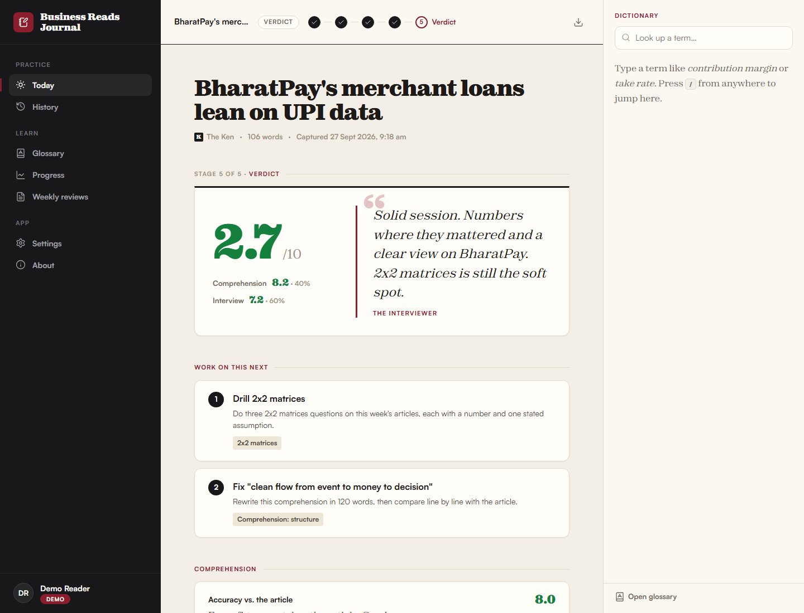
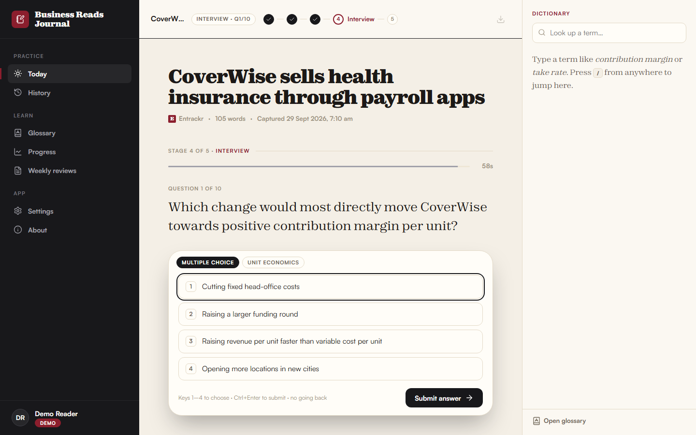
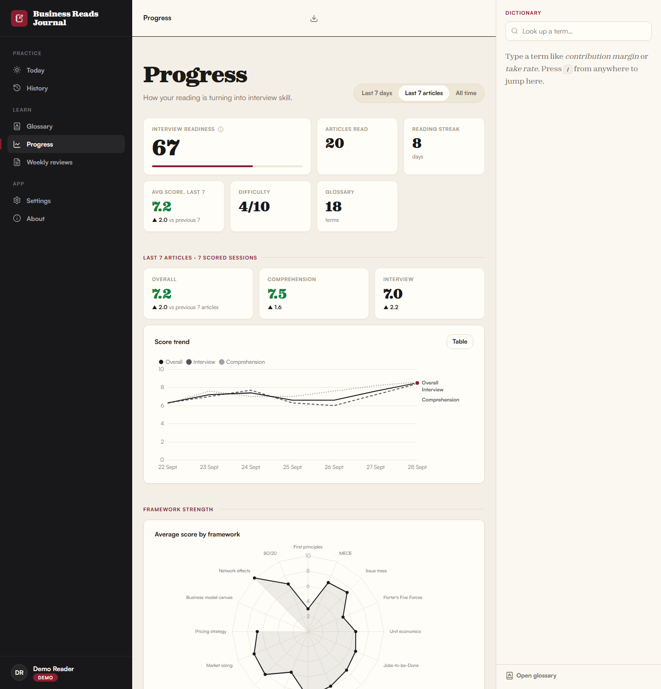
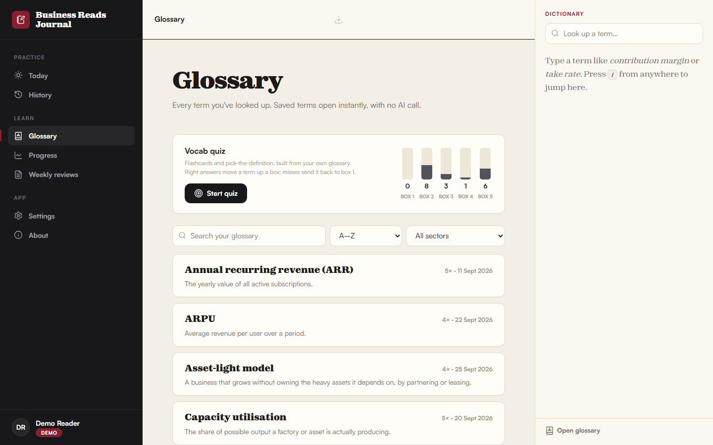
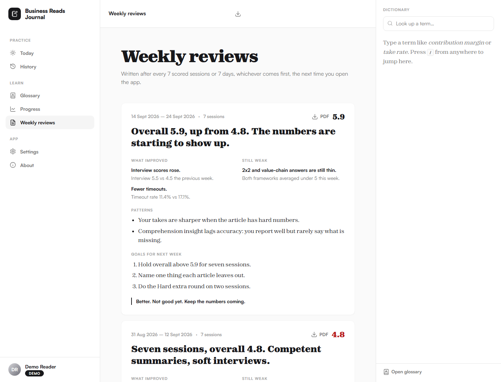

I read The Ken, The Arc and Entrackr every morning. This journal makes me prove I understood each article: condense it, pull a few threads, then face a timed 10-question interview scored by an AI interviewer that doesn't round up to be kind.

Read on the original site, then send the article from your browser with one click.
Condense it in 100–200 words: what happened, why it matters, the money, your take.
Follow 3–5 threads: competitors, the sector, founders, the core concept.
10 questions, 60 seconds each, no going back. MCQs, estimations, MECE breakdowns.
A blunt score, a model answer beside every answer, and two things to fix next.
The evaluator is modelled on a demanding senior interviewer: short sentences, no compliments unless earned. It calls out vague thinking, missing numbers and lists that aren't mutually exclusive and collectively exhaustive. It is harsh on the work and never on the person.
An acceptable first-round answer.
Rare. Needs numbers, structure and a non-obvious insight.
Almost never. Scores are never rounded up.




Screenshots use the app's demo mode: every company, article and score shown is fictional.
127.0.0.1. No cloud, no accounts.